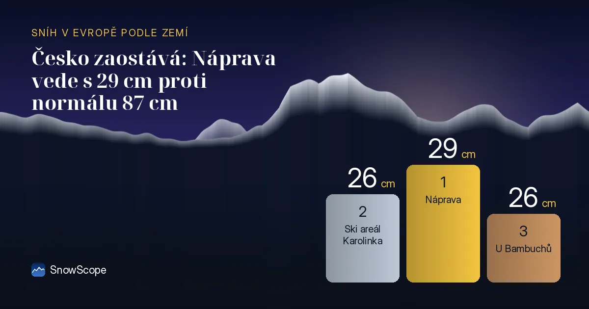
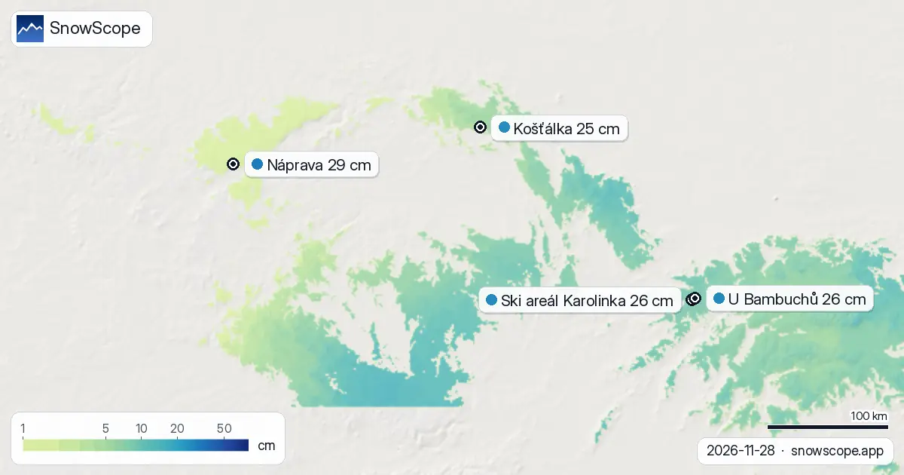

Česko zaostává: Náprava vede s 29 cm proti normálu 87 cm
Náprava drží nejhlubší sníh v Česku s 29 cm, což je však pouze třetina toho, co konec listopadu obvykle přináší do hor. Sněhová zásoba Česka na 22 320 čtverečních kilometrů je daleko za tím, kde by měla být v této sezoně, přestože poslední týden přinesl na vysoké polohy značný nový sníh.
Podívejte se na předpověď sněhu pro Náprava v aplikaci SnowScopeVýška sněhu, upozornění a 3D mapa, zdarma.
Sněhová zásoba výrazně pod normálem
Nápraviny 29 cm tvoří pouhých 33 procent typické tloušťky pro 28. listopadu. Měřeno na tomto letovisku v nadmořské výšce 896 metrů, množství vody uložené v sněhové pokrývce je třetina toho, co hydrologové očekávají, když se přistěhuje zima. Košťálka v nadmořské výšce 764 metrů vypráví jiný příběh: jejích 25 cm je vlastně 125 procent normálu, což naznačuje, že lokalitám v nižších polohách se daří lépe než vyšším vrcholům.
V celém Česku nyní 78 procent mapované oblasti nese sníh, což je nárůst z pouhých 7 procent před týdnem. Tento skok ukazuje, jak rychle se podmínky změnily, ale absolutní tloušťka zůstává tenká. Ve výškách nad 1 000 metrů SnowScope ukazuje průměr 6 cm s téměř úplným pokrytím. Pod 1 000 metrů leží průměrně 4 cm přes 78 procent území.
| Resort | Today | Normal for the date | Share of normal |
|---|---|---|---|
| Náprava | 29 cm | 87 cm | 33 % |
| Košťálka | 25 cm | 20 cm | 125 % |

Kde se nový sníh usadil
Poslední 72 hodin přinesly 13 cm čerstvého sněhu na nejvyšší части Česka. Šumava si vzala nejvíce, s 15 cm čerstvého sněhu přidaného ke sněhové pokrývce. Jeseníky přijaly 14 cm a Beskydy přidaly 10 cm. Tato vlhkost doplňuje horské zásobníky, ale počínaje nízkou základnou znamená, že celkový sloupec zůstává skromný.
V poslední 24 hodiny nespadl žádný nový sníh a příští tři dny budou bez srážek. SnowScope předpovídá až 7 cm v příštím týdnu, s nejsněžnějším dnem očekávaným 4. prosince, kdy přinese 4 cm.

Náprava vede, ale jen těsně před konkurenty
Mezi 171 středisky mapovanými v celém Česku má nyní 156 měřitelný sníh. Nápraviny 29 cm ji staví na vrchol, následují Ski areál Karolinka a U Bambuchů, oba s 26 cm. Košťálka, přestože její výkon proti normálu je silný, má 25 cm. Ski areál Sedlář vykazuje 23 cm, nejméně z pěti nejhlubších míst.
Rozestup mezi špičkovými středisky je malý. Za poslední 72 hodin Ski areál Sedlář přidal z této skupiny nejvíce, získal 12 cm, zatímco Náprava získala pouze 1 cm. To poukazuje na to, jak proměnlivý byl sníh v horách během nedávného období.
Vodní zásoby rostou z deficitu
Před týdnem mělo Česko sníh na 1 890 čtverečních kilometrů. Dnes pokrývá 22 320 čtverečních kilometrů, což je nárůst o více než 20 000 čtverečních kilometrů bílého území. Pro manažery vody sledující přítok a odtok z rezervoárů znamená toto rychlé rozšíření, že horská sněhová pokrývka nyní přispívá ke toku potoků, ačkoli celkový objem na jednotku plochy je stále nízký.
Hranice sněhu leží na 500 metrech. Lyžaři míří na nižší svahy a najdou zde skvrnitou pokrývku; ti, kdo stoupají nad 1 000 metrů, najdou konzistentnější bílé území, ačkoli stále tenké podle měřítek konce listopadu.
Příští týden přináší malý vzestup
Mezi 6. a 12. prosincem SnowScope předpovídá až 21 cm na nejlepších místech v celém Česku, více než dvojnásobek minulého týdne. Tento delší výhled naznačuje, že horská sněhová pokrývka se v příštích 10 dnech prohloubí, ale počáteční bod—nyní výrazně pod normálem—znamená, že i s čerstvými příspěvky se zásoby nemusí brzy dosáhnout typických hodnot středu zimy.
Zatím nyní hory drží tenčí než obvyklou vodní zásobu na 28. listopadu. Trend je vzestupný, ale deficit je skutečný.
Tipy pro lyžaře
- Před jížděním mimo trasy zkontrolujte oficiální bulletin lavinového nebezpečí, zvláště na strmých svazích nad 1 000 metrů, kde se nový sníh váže ke tenkým spodním vrstvám.
- Náprava a Ski areál Karolinka mají nejspolehlivější hloubku sněhu; nižší střediska pod 700 metrů mohou mít skvrnitou pokrývku a vyžadují kontrolu.
- Poslední 72 hodin přinesly nejvíce sněhu do Šumavy a Jeseníků; pokud se chystáte do těchto pohoří, bude základ stabilnější než na nižších svazích.
- V příštích třech dnech není předpovězen žádný nový sníh; podmínky se ztuhnou. Očekávejte firn nebo ledové skvrny na jižních svazích.
- Vraťte se po 4. prosinci pro čerstvější podmínky; nejsněžnější den týdne přidá 4 cm, přestože to sezonu stále ponechá v deficitu.
About these numbers
Resort snow depths are the deepest snow on the resort's upper slopes on the date shown; they are estimates for an area, not a measurement at one point. Forecasts can change. Always read the official avalanche bulletin before going off-piste.
Cite this report
For research, teaching or the press: the numbers and charts are free to reuse under CC BY 4.0 with this citation.
SnowScope (2026), Česko zaostává: Náprava vede s 29 cm proti normálu 87 cm, https://snowscope.app/blog/cs/2026/11/czechia-snow-behind-normal-28-november-2026.html, accessed 2026-11-28
SnowScope (Atlas Labs). (2026, November 28). Česko zaostává: Náprava vede s 29 cm proti normálu 87 cm. SnowScope snow reports. https://snowscope.app/blog/cs/2026/11/czechia-snow-behind-normal-28-november-2026.html
BibTeX
@misc{snowscope2026czechiasnowbehindnormal2,
author = {{SnowScope (Atlas Labs)}},
title = {Česko zaostává: Náprava vede s 29 cm proti normálu 87 cm},
year = {2026},
month = nov,
howpublished = {\url{https://snowscope.app/blog/cs/2026/11/czechia-snow-behind-normal-28-november-2026.html}},
note = {Published 2026-11-28 13:41 UTC; accessed 2026-11-28}
}· CC BY 4.0 · Methods, data and tools →
Náprava: snow and temperature by height, this winter vs last (tools) →
Follow Náprava
Zdarma: zpráva, když přichází nový sníh, a předpověď každé ráno.